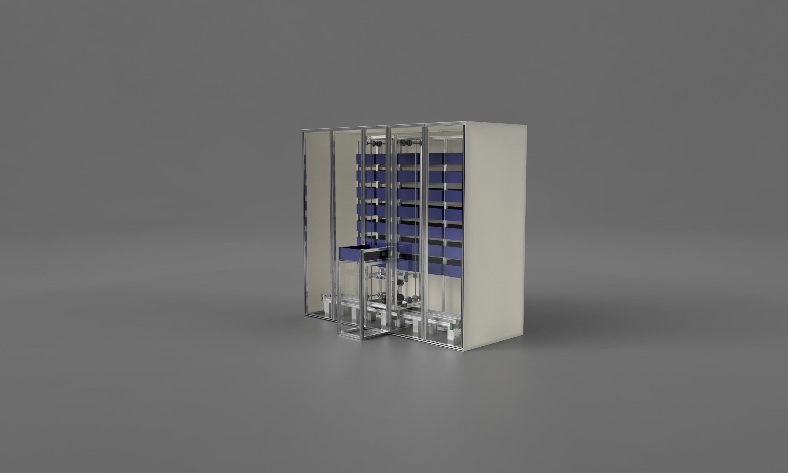
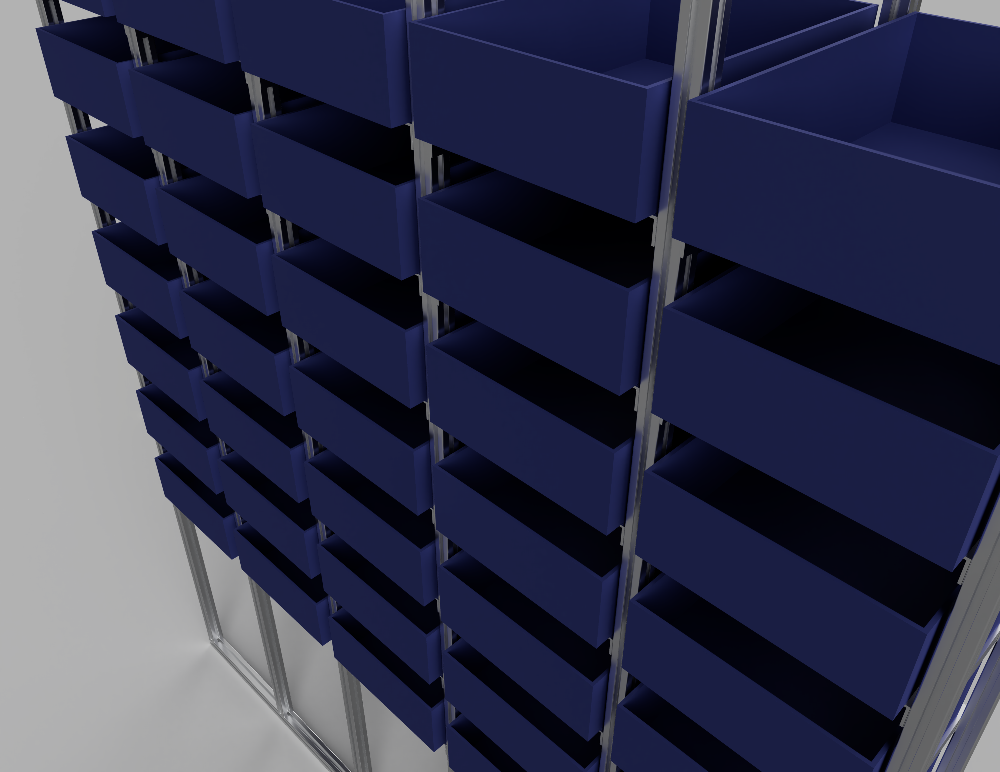
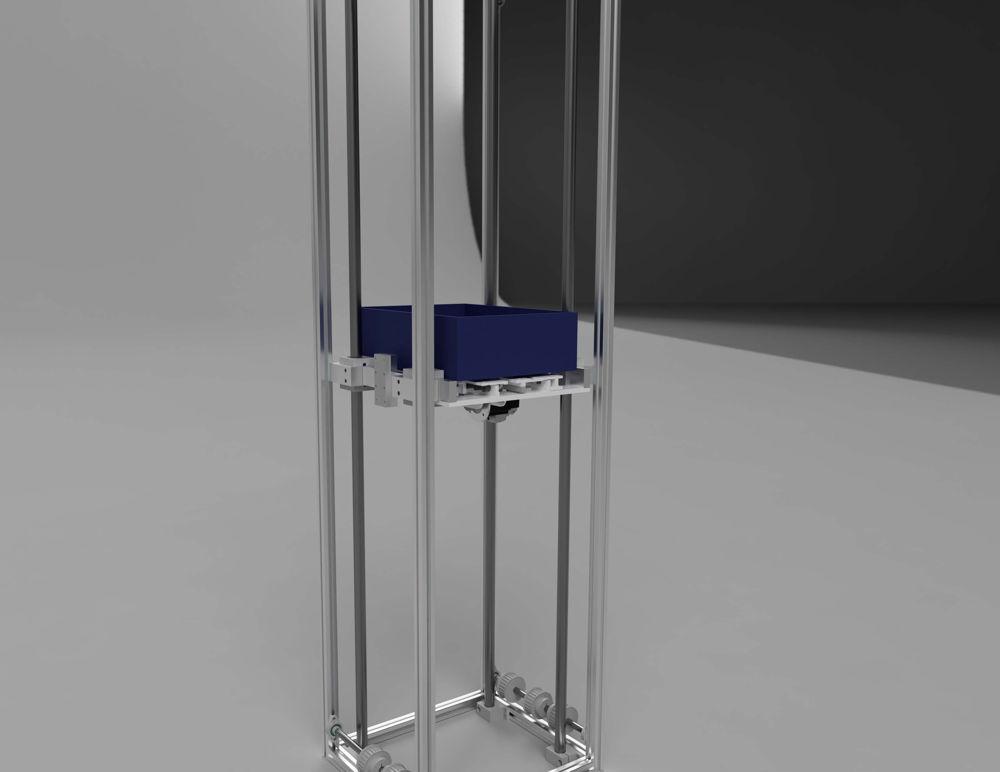
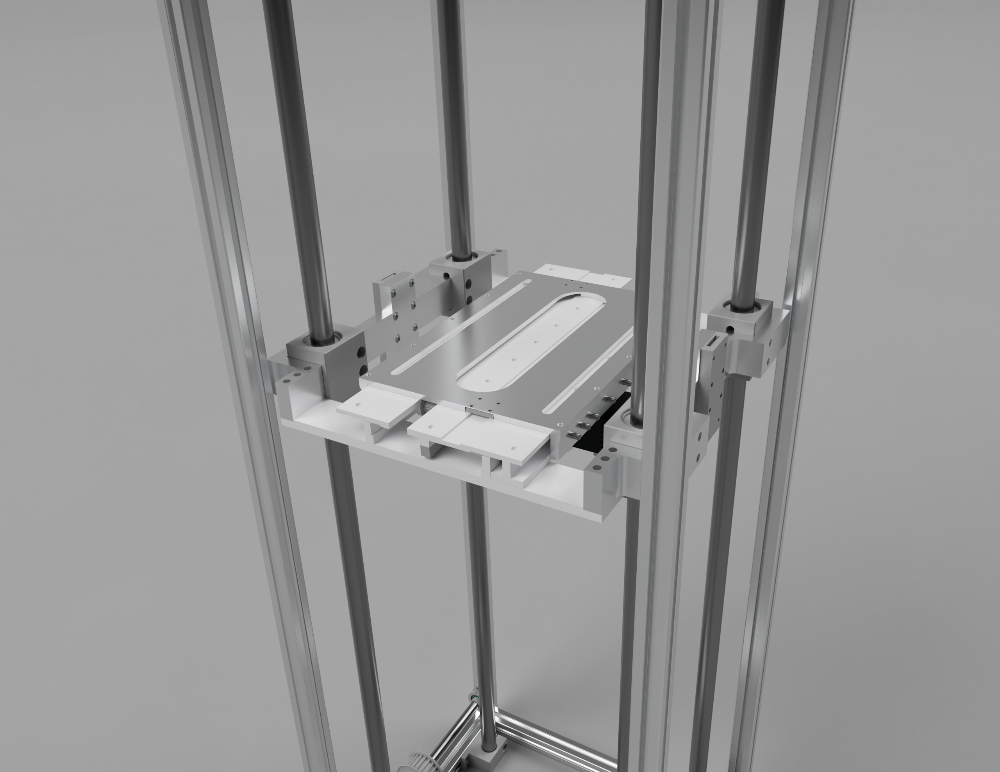
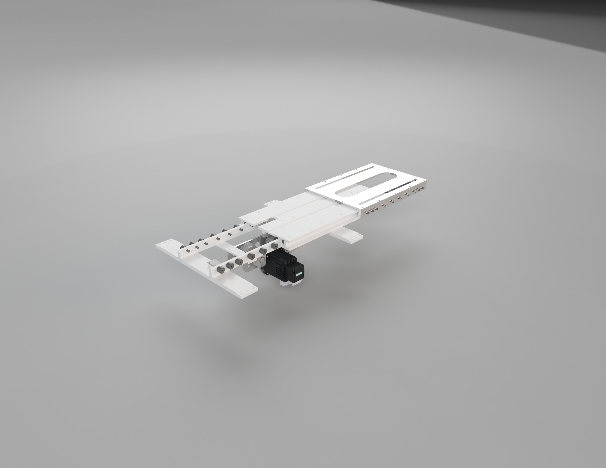
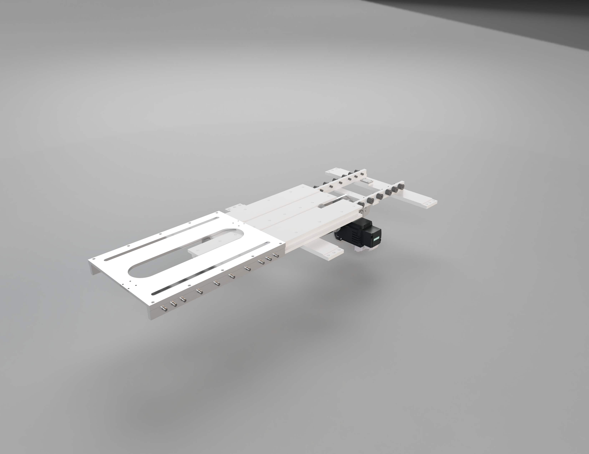

← All work
Development of ASRS.
A 360 kg Automated Storage and Retrieval System built to industry standards. I handled the process monitoring, control, and IIoT integration across the PLC, HMI, gateway and I/O-link master layers.

Position
Junior Research Fellow
Smart Manufacturing Lab, BVM
Smart Manufacturing Lab, BVM
Year
2024
Capacity
360 kg
built to industry standard
built to industry standard
Stack
PLC · HMI · OPC UA
CodeSYS · Thingworx · Kepserver
CodeSYS · Thingworx · Kepserver
The brief.
The Automated Storage and Retrieval System (ASRS) carries 360 kg and was designed to meet industry standards. It does process monitoring and control across a PLC, HMI, gateway, and I/O-link master. For the Industrial Internet of Things (IIoT) side I used Thingworx and Kepserver so the system reports its state reliably on a smart manufacturing floor.
The project is still young. The design is done, and we are now moving into manufacturing.
// status: design complete · manufacturing in progress
Skills deployed.
- Industrial control programming with PLC and HMI workflows in CodeSYS
- OPC UA pipelines connecting PLC, gateway and Thingworx for live data
- CAD design of the storage frame, slider rails and vertical lift
- Power system layout and sensor integration across rack levels
- The full warehouse cycle: store, retrieve, index
Gallery
Build artifacts.






Up Next